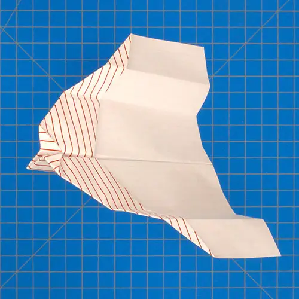

Nous allons calculer la vitesse minimale que doit atteindre l'avion pour que la portance équilibre son poids.
C’est la force qui maintient l’avion en l’air et s’oppose au poids. Elle naît de l’interaction entre les ailes et l’air.
Nous utilisons le modèle "The Bird", un avion en papier classique.
Le poids \( P \) se calcule par \( P = m \times g \) avec \( g = 9,81\ \text{m/s}^2 \) (accélération de la pesanteur).
Le poids est d’environ 0,049 N (newton). C’est très faible : l’avion est léger !
On cherche \( V \) telle que \( \frac{1}{2} \rho V^2 S C_L = P \).
Application numérique :
Résultat : L’avion doit voler à environ 3,5 m/s (soit 12,6 km/h) pour que la portance équilibre son poids.
Si on lâche l’avion sans vitesse initiale, il accélère sous l’effet de la gravité. En chute libre (sans frottement), la vitesse atteinte après une hauteur \( h \) est :
Soit environ 64 cm. En théorie, si on lâche l’avion de plus haut que 64 cm, il pourra dépasser 3,5 m/s.
L’air oppose une force de traînée qui s’oppose à la chute. La véritable équation du mouvement est :
Avec \( C_D \approx 0,5 \) (coefficient de traînée).
En résolvant cette équation pas à pas (méthode d’Euler), on trouve qu’il faut environ 1,20 m de hauteur pour atteindre 3,5 m/s.
Tu peux vérifier ces calculs par toi-même :